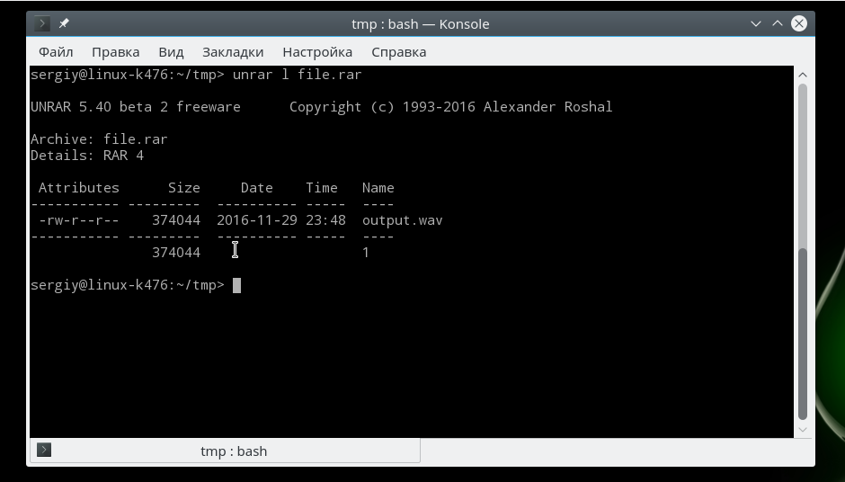
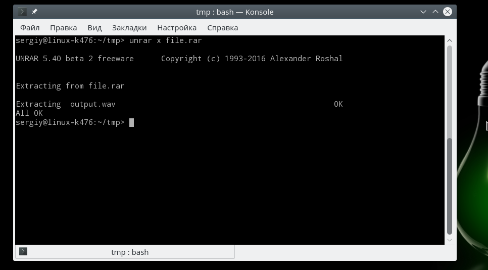
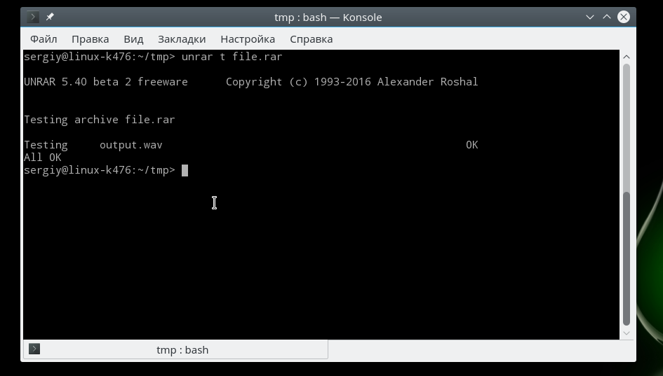
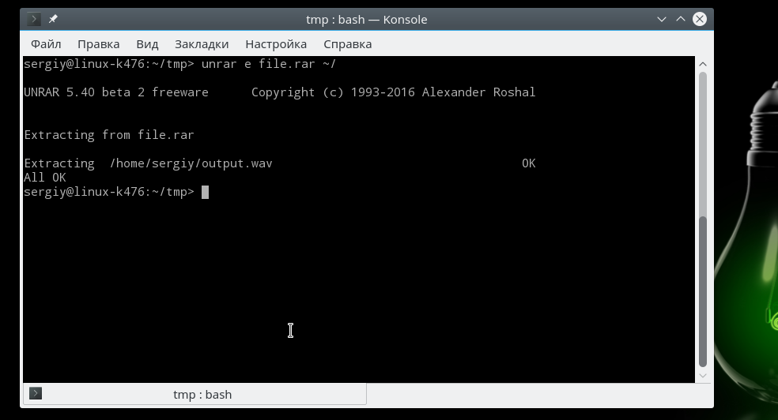
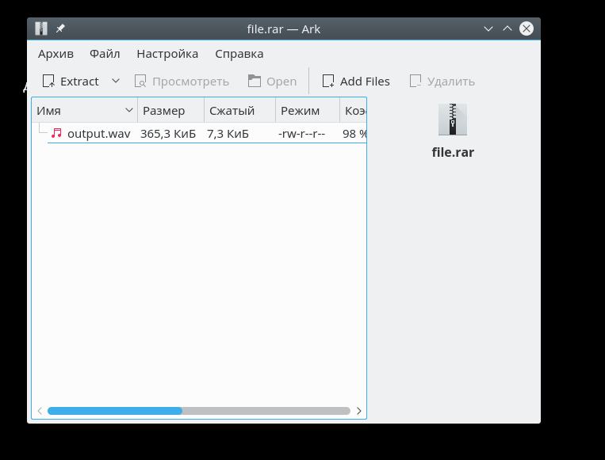

Как распаковать rar в Linux
В операционной системе Windows часто используются два формата архивов, это ZIP и RAR. Они наиболее часто применяются для сжатия файлов и хранения их на компьютере. Но в Linux немного другая система, здесь для сжатия всех данных используется формат tar.gz. По умолчанию в системе не поставляются инструменты для работы с архивами форматов Linux.
В одной из предыдущих статей мы рассматривали как распаковать zip в Linux. В сегодняшней статье мы сосредоточимся на втором формате и рассмотрим как распаковать rar linux. Рассмотрим несколько способов и утилит, с помощью которых вы сможете решить эту задачу.
Как распаковать RAR в Linux
Формат RAR был разработан российским программистом, Евгением Рошалом, отсюда и название формата - Roshal ARchiver. Изначально формат был разработан для DOS и поддерживал несколько улучшений по сравнению с уже использовавшимся тогда ZIP. Сразу была поддержка большого количества файлов, разбиения архива на части и создания самораспаковывающихся архивов.
Распаковка rar linux выполняется с помощью утилиты unrar. А упаковка архива командой rar. Обычно она не поставляется в системе по умолчанию, но вы можете очень просто установить ее из официальных репозиториев. Для установки утилиты в Ubuntu выполните такую команду:
sudo apt install unrar
В Fedora и других системах, использующих пакеты rpm, имя будет точно таким же, только будет отличаться пакетный менеджер:
sudo yum install unrar
$ sudo dnf install unrar
Перед тем как перейти к работе с командой и рассмотрению того как распаковать rar linux давайте рассмотрим ее синтаксис:
$ unrar команда опции архив файлы путь_для_расспаковки
Основной смысл работы утилиты уже понятен, но рассмотрим ее параметры подробнее:
Опции настраивают поведение утилиты, рассмотрим основные опции, которые могут вам понадобиться:
Основные опции, которые вам могут понадобиться мы рассмотрели, теперь давайте приведем несколько примеров как работать с утилитой. Чтобы извлечь файлы из архива в текущую папку достаточно передать утилите имя архива и команду e:
unrar e file.rar
Вы можете вывести содержимое архива, ничего не распаковывая с помощью команды l:
unrar l file.rar

Чтобы сохранять полный путь, который прописан в архиве нужно использовать команду x:
unrar x file.rar

Также вы можете проверить архив на целостность с помощью команды t:
unrar t file.rar

Кроме того, вы можете указать папку, в которую стоит распаковывать файлы:
unrar e file.rar ~/

Это все команды unrar, которые вам могут понадобиться при повседневной работе с архивами, обратите внимание, что после установки утилиты unrar многие менеджеры архивов, например, Arc, теперь тоже поддерживают этот формат:

Но без этой утилиты вы получите ошибку что утилита не знает что это за формат архива. Всем графическим программам нужен этот rar архиватор linux.
Выводы
В этой небольшой статье мы рассмотрели как выполняется распаковка rar linux с помощью утилиты unrar или других графических утилит. Как видите, все делается очень просто, если у вас остались вопросы о том, как разархивировать rar linux, спрашивайте в комментариях!
https://youtu.be/iio7pVX6Bws